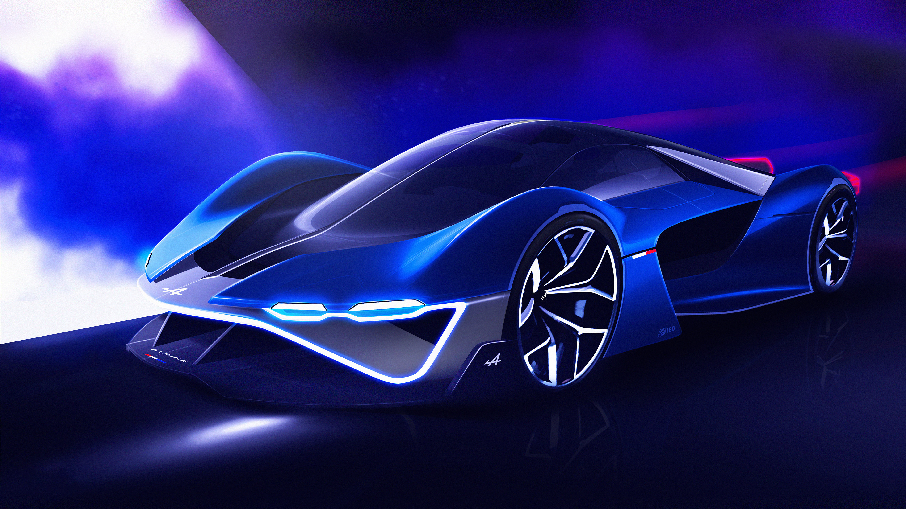

Hypersportovní auta

Hypersportovní auta jsou synonymem pro vášeň a výkon na silnici. Tyto vozy představují nejlepší technologické a výkonnostní možnosti, které jsou k dispozici běžným motoristům. Jsou ztělesněním rychlosti a sportovního ducha.